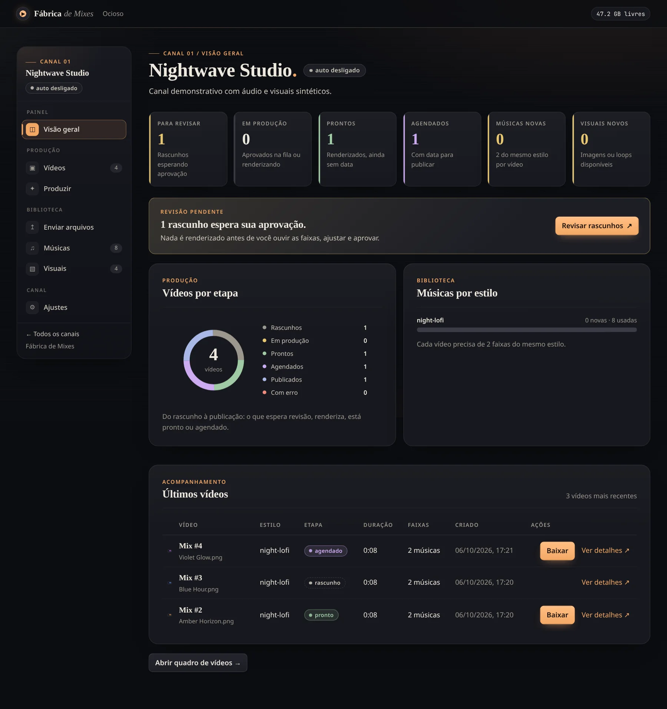
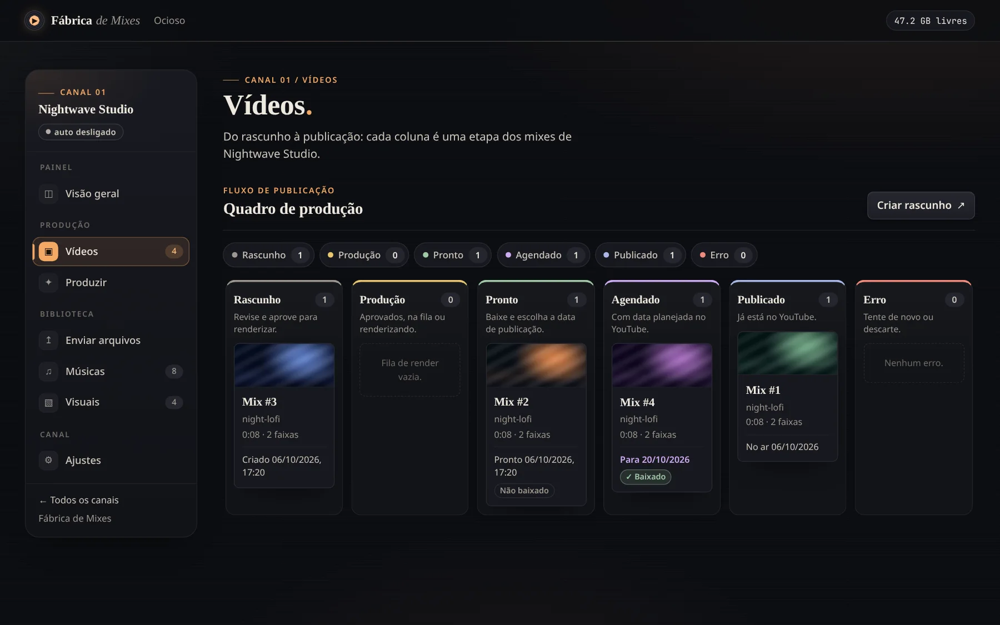
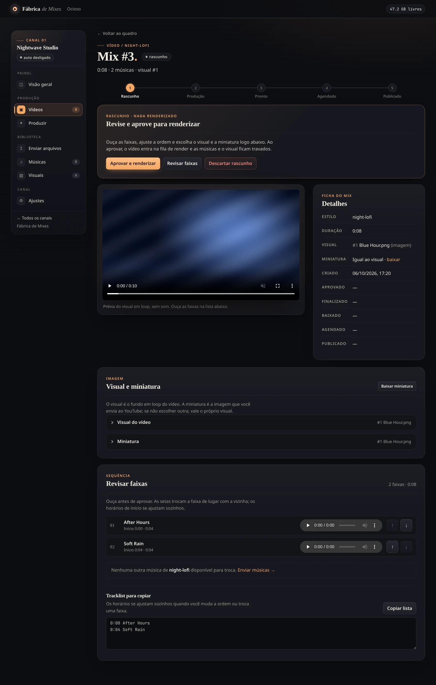

v0.1.0 Self-hosted No GPU required MIT License
Long music mixes for YouTube, assembled on your own machine.
Fábrica de Mixes organizes the songs and visuals you already have, drafts hour-long mixes from them, and renders the approved ones on a regular CPU. You stay in control of every step: nothing renders without your approval, and publishing to YouTube is done by you, by hand.
This page is documentation only. There is no hosted version of the app: you run it on your own computer or server. The web interface is in Brazilian Portuguese — leia o README em português.
- DraftRascunho
- ProductionProdução
- ReadyPronto
- ScheduledAgendado
- PublishedPublicado
What it is
A production line for mixes, not a music generator.
What it does
- Keeps a separate library of songs, visuals and styles for each YouTube channel.
- Reserves N songs of the same style + 1 visual for each draft, never mixing styles in one video.
- Avoids reusing a song or visual that is already in a video, unless you enable reuse.
- Renders a 1080p30 MP4 on the CPU — roughly 1–2 minutes per hour of mix.
- Produces a timestamped tracklist ready to paste into the YouTube description.
What it does not do
- It does not generate music. It can store the prompt you used for a style, so you can copy it later.
- It does not upload to YouTube. You download the MP4 and thumbnail and publish manually.
- It does not check usage rights or YouTube policies. Use only material you own or have licensed.
- It has no login. See the security notice before running it.
Workflow
From a folder of songs to a downloaded video.
-
Create a channel
Each YouTube channel gets its own songs, visuals, styles and videos.
-
Upload material
Drag a folder named after a style, like
lofi-jazz-lounge/, and its songs inherit that style. Images and short loops become visuals. Duplicates are detected by hash and skipped. -
Generate drafts
Draft a specific style or rotate through the available ones. Optional automatic mode keeps a few drafts ready, but still never renders on its own.
-
Review
Reorder and swap songs, change the visual and pick the thumbnail.
-
Approve
Only then does the video enter the render queue. Videos render one at a time; failures can be retried.
-
Download
Grab the finished MP4, the thumbnail and the tracklist.
-
Publish on YouTube yourself
Record the planned date, the link and the publication date so the board stays accurate.
-
Free up space
Optionally delete the file of a published video. Its record and history are kept.
Screenshots
The interface, as it runs locally.
Captured from a local demo instance with fictitious songs and visuals. Labels are in Brazilian Portuguese, the language of the interface. Select an image to open it at full size.






Features
Built for running a few channels without a GPU.
-
GPU-free rendering
Each visual is converted once into an H.264 1080p30 loop. Renders then copy the loop and encode only the audio.
-
One style per video
Every song has a style and a video never mixes them. Store the prompt behind each style for your own reference.
-
No accidental repeats
Used songs and visuals are not picked again by default; with reuse enabled, the least-used ones go first.
-
Approval gate
Manual or automatic, drafts always wait for you. Automatic mode pauses while any video has an error.
-
Ready-to-paste tracklist
Each video lists its visual and every song with its start time for the YouTube description.
-
Plain, portable data
One SQLite database plus a media folder, with documented backup and restore procedures.
Install
Run it with Docker in a few commands.
You need Docker Engine with the Compose plugin; the image ships Node and ffmpeg. Without
Docker, you need Node 22.18 or newer plus ffmpeg and ffprobe.
Run it in a dedicated VM or container.
git clone https://github.com/Matheuscara/fabrica-mixes.git
cd fabrica-mixes
cp .env.example .env # review BIND_HOST, PORT, DATA_PATH, TZ
docker compose up -d --build
Then open http://localhost:8080 on the same machine. Configuration, disk-space
estimates, backup and restore are covered in the README.
v0.1.0
First public release
Release notes and the tagged source are on GitHub.
Read the v0.1.0 releaseOpen source
Contribute, report, reuse.
- Contributing guide Set up, run the smoke test and submit changes. Bug reports, docs in English or Portuguese, and code are welcome.
- Issues Report bugs and suggest improvements. Report vulnerabilities privately, as described in the security policy.
- MIT License Free to use, modify and redistribute under the terms of the MIT License.